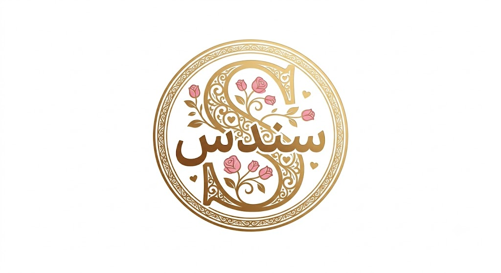

📖 خيوط النور
من قسوة الأيام إلى سَكينة "سُندس"
"رحلة مستمرة، يجمعهم فيها وعد بالبقاء..."
كتب بواسطه: Mohammed Saad

"رحلة مستمرة، يجمعهم فيها وعد بالبقاء..."
كتب بواسطه: Mohammed Saad
أنا عملت ليكي المفاجأة دي يا حبيبتي، يارب ما تكوني زعلانة مني، أنا بحبك جداً وأظن دي حاجة هتخليكي تعرفي هل أنا عايز أسيبك ولا لأ.. 💕
قراءة ممتعة يا روحي ✨
يلا بسم الله؟
في بداية العام، كانت الحياة تسير في مسارها الطبيعي، شاب يضع أحلامه نصب عينيه ويذاكر لبناء مستقبل آمن. ولكن فجأة، وبدون مقدمات، انهارت الجدران التي كان يستند إليها حين قرر والداه الانفصال. لم يكن مجرد خبر عابر، بل كان زلزالاً هز كيانه، وجعله يشعر أن العائلة التي طالما كانت حصنه تتسرب من بين يديه.
Life is not always fair, but we have to keep going.في تلك اللحظات القاسية، لم يختر الهروب أو البكاء على الأطلال، بل قرر أن ينضج قبل أوانه. قال لنفسه بحسم: "الشغل مش عيب، أنا راجل وهعتمد على نفسي". نزل إلى الشارع، وابتلع كبرياءه، وعمل "عامل نظافة" في أحد المطاعم. لم يكن المجهود البدني هو ما يكسر الظهر، بل كانت نظرات بعض البشر التي لا ترحم. أن تكون شاباً متعلماً، طموحاً، وتجد من هو أقل منك وعياً ينظر إليك بتعالٍ، ويقذف في وجهك كلمات مثل: "انت رايح فين وتعمل إيه؟ انت هنا مجرد عامل نضافة!".. كانت هذه العبارات سكاكين تمزق روحه من الداخل، ورغم ذلك كان يبتلع إهانته ويكمل يومه، لأنه كان يؤمن بأن:
Hard times create strong men.زادت الأيام قسوة حين تم اتهامه ظلماً بسرقة "تيشيرت"، ورميه بكلمات جارحة تصفه بالغباء وعدم الفهم. كان يقف صامتاً، محترقاً من الداخل، وهو يعلم علم اليقين أن يده لم تمتد لحرام قط. وجاء شهر رمضان ليزيد من قسوة الاختبار؛ وظل الشاب واقفاً على قدميه، جائعاً، مرهقاً، يتجرع قسوة البشر ومرارة الحاجة. بعد ثلاثة أشهر من هذا العذاب النفسي والجسدي، اتخذ قراره الحاسم: "يكفي هذا.. سأعود لدراستي، سأدخل الثانوية العامة، وسأثبت للجميع من أنا".
ترك الشاب العمل خلف ظهره، ودخل مرحلة الثانوية العامة حاملاً في قلبه تحدياً كبيراً ليثبت ذاته. في خضم هذه المعركة الدراسية، ظهرت في حياته فتاة تُدعى "هنا". بدأت تراسله وتتحدث معه باستمرار، مما أدخل عقله في دوامة من التساؤلات وحالة من الـ "إيرور" التام.
ولأنه كان يفتقد الشعور بالاهتمام في تلك الفترة الصعبة من حياته، حاول جاهداً أن يقنع نفسه بأنه معجب بها، رغم أن صوتاً خفياً بداخله كان يؤكد له أنه لا يراها سوى كأخت وزميلة. كان يحاول خلق مشاعر من العدم ليتماشى مع فكرة أن هناك من يهتم لأمره.
Sometimes, you have to learn things the hard way.سرعان ما تكشفت الحقائق حين توقفت الدراسة. ظهرت النوايا بوضوح؛ لم تكن "هنا" معجبة به، ولم تكن تراه سوى "بنك معلومات" تستعين به وقت حاجتها للمذاكرة، وحين تنتهي الحاجة، يختفي الاهتمام. كان هذا الاكتشاف صفعة موجعة لقلبه النقي. أدرك حينها أن المشاعر لا يمكن افتعالها، فقرر بكرامة أن يطوي هذه الصفحة تماماً، ليعود إلى وحدته، يركز في حلمه ومستقبله فقط.
Fake feelings hurt the most, but they teach us what is real.في الأول من مايو عام ٢٠٢٦، كان القدر يخبئ له بداية جديدة تماماً. دخل إلى تطبيق "ديسكورد" باحثاً عن صحبة دراسية تعينه على ملل المذاكرة. هناك، وجد صديقته "هاجر" تذاكر مع فتاة أخرى لم يعرفها من قبل، كان اسمها "سندس". في الأيام الأولى، لم تكن "سندس" بالنسبة له سوى زميلة محترمة، فتاة هادئة يبدو من حديثها حسن التربية والأخلاق.
لكن الشرارة انطلقت في يوم غير متوقع، حين دخل إلى المحادثة العامة ووجدها تتحدث مع شخص آخر. فجأة، وبدون أي مقدمات، شعر بنيران الغيرة تشتعل في صدره. بدأ يسأل نفسه بذهول: "أنا ليه متضايق كدة؟ أنا ليه حاسس إني عايز أروح أضرب الراجل ده وأمنعه يكلمها؟". في تلك اللحظة، أدرك أنه وقع في الفخ الجميل. اكتشف أنه معجب بشدة بفتاة لم يرَ وجهها يوماً.
Love comes when you least expect it.بمجرد أن استوعب هذه الحقيقة، اجتاحته موجة من السعادة لم يختبرها من قبل. التقط هاتفه فوراً واتصل بأحد أقرب أصدقائه، بصوت يملؤه الحماس والضحك قال له: "أنا لقيتها يا صاحبي! لقيت البنت اللي خطفت قلبي". نزل إلى الشارع، وكأن الأرض لا تسعه من الفرحة؛ اشترى أكلته المفضلة، وجلب الكثير من الحلويات. كان يمشى في الطرقات وهو يبتسم بلا سبب. بلا شك، كان هذا أفضل يوم في حياته.
It was literally the best day ever.مرت الأيام، وزاد التعلق، حتى جاء يوم عرفة، اليوم الذي تُفتح فيه أبواب السماء لكل قلب صادق. في هذا اليوم، استيقظ الشاب من نومه بعد أن رأى "سندس" في حلمه، وكأنها رسالة ربانية لتؤكد له أن ما في قلبه ليس مجرد إعجاب عابر، بل هو حب حقيقي وصادق.
في تمام الساعة السابعة مساءً، في تلك الساعة الذهبية التي تسبق غروب شمس يوم عرفة، حيث تتنزل الرحمات وتُعتق الرقاب، وتكون أبواب السماء مشرعة لكل قلبٍ صادق ومنكسر. جلس مع نفسه في خلوة، وعيناه تفيضان بالدموع، يسمع دقات قلبه تتسارع مع كل دعوة يرفعها للسماء. أمسك بورقة وقلم، وكتب رسالة طويلة لنفسه ولربه، وثق فيها كل ما يثقل قلبه، وكل أمنية يخاف أن ينطق بها بصوت عالٍ.
بدأ دعاءه بأوجع ما في قلبه، عائلته المشتتة وهو يرتجف: "يارب جمع عيلتي تاني زي الأول عشان أبويا وأمي انفصلوا، يارب خليهم ليا وأكون أول واحد أموت فيهم عشان مش هقدر أتحمل خسارة حد فيهم". ثم انتقل إلى حلمه الدراسي: "يارب أخش هندسة، ولو مش ليا ارزقني بالأحسن منها". (وقد أثبتت الأيام لاحقاً صدق تسليمه العظيم لله).
ومع اقتراب الشمس من المغيب، لم ينسَ حبيبته في دعائه الخالص، فرفع كفيه يرتجفان شوقاً ورجاءً: "يارب أتجوز البنت اللي حبيتها لو كانت ليا، ولو مش ليا يارب ارزقها بالأحسن مني واللي يستاهلها". وتدفق الدعاء بالروحانيات: "يارب انتظم في صلاتي، يارب أحفظ القرآن، يارب لو طلعت مهندس ابني بيت ليك". بكى وهو يتذكر ذنوبه وأخطاءه، ودعا الله أن يكفيه بحلاله عن حرامه. كان هذا اليوم نقطة تحول حقيقية، حيث اغتسل قلبه بالدعاء، وولدت روحه من جديد مع غياب شمس ذلك اليوم العظيم.
دخلت السنة الدراسية في مراحلها الأكثر رعباً: فترة الامتحانات. وهنا، لم تكن المعركة معركة درجات فقط، بل كانت معركة مشاعر وأعصاب. في يوم امتحان الكيمياء، أرسلت له "سندس" رسالة تخبره فيها بأنها متعبة بشدة، ثم انقطع الاتصال ولم تخبره بتفاصيل. في اليوم التالي، الساعة الثامنة صباحاً، قبل الامتحان بساعة واحدة، حاول التواصل معها مراراً لكنها لم ترد. افترض أنها ذهبت للامتحان، وذهب هو إلى لجنته. طوال وقت الامتحان، كان جسده في اللجنة وعقله وروحه معها. كان يشعر بانقباض شديد في صدره، ألم حقيقي يعتصر قلبه، ولم يستطع التركيز في ورقة الإجابة المليئة بالأسئلة المعقدة. قرر أن ينهي الامتحان بأي شكل، وما إن سلم ورقته وخرج، حتى خارت قواه من شدة الضغط النفسي والقلق عليها، وسقط مغشياً عليه أمام أصدقائه الذين سارعوا بإفاقته بالماء. عاد إلى هاتفه ليكتشف الكارثة: لم تذهب للامتحان من شدة مرضها. في تلك اللحظة، نسي تعبه تماماً، وظل مستيقظاً لثلاثة أيام متواصلة، يراقب هاتفها، وينتظر استيقاظها ليطمئن عليها، ويجلس معها طوال اليوم يحاول إضحاكها وإخراجها من حالة الحزن.
ولم يقف دعمه هنا؛ ففي يوم امتحان الأحياء، وهو اليوم الذي كان يمتحن فيه هو (رياضة تطبيقية) بعد إخفاقه في (البحتة)، قرر أن يضع خوفه جانباً. بحث في النظام الذي يتبعه واضعو الامتحانات، واستنتج ما قد يأتي، وقام بحل امتحان الدور الثاني لعام ٢٠٢٥ كاملاً، وصاغه في ملف (PDF) وبعثه لها لتستفيد منه. لم يفعل ذلك بحثاً عن شكر، أو ليُظهر نفسه كبطل، بل ليوصل لها رسالة صامتة: "حتى في أشد أوقاتي صعوبة، أنا سندك، ولن أتركك أبداً".
I will never let you down, no matter what.قبل امتحان اللغة الفرنسية بيوم واحد، وتحديداً في يوم ٢٢ يونيو ٢٠٢٦، لم يكن البوح مخططاً له، بل جاء فجأة كـ
A beautiful accident.بدأت القصة حين فتحت "سندس" موضوعاً حول كلام قاله شخص يُدعى "مهند"، لتسأله بتوتر: "يعني الكلام اللي قاله مهند مش صح؟؟". حين أصرّ على معرفة ما قاله مهند، أخبرته أن مهند قال لها إنها "تبعُه". في تلك اللحظة، توقفت أنفاس الشاب، وأرسلت له هي بخجل وارتباك: "إيدي بتترعش الله يسامحك".
هنا لم يعد قادراً على كتمان ما يعتريه. رد عليها بصدق عفوي قائلاً: "انتي متعرفيش أنا دماغي صدعت وضربات قلبي زادت وحسيت إني حران أوي ومتوتر.. والله هموت فيها".
سألته بتعجب وبراءة: "طب ليه؟ أو اشمعنا أنا؟"
أجابها بكل وضوح: "ما أعرفش، ممكن طريقة كلامك محترمة ومش بتشتمي.. أكتر من حاجة كمان كنت شايفك مميزة فيها عن غيرك". وحين أذن العصر، طلب منها أن تقوم لتصلي، فبادلته نفس الطلب قائلة: "قوم صلي.. بطل برود".
رد عليها قبل أن يذهب للصلاة بسعادة غامرة: "النهارده يوم ليس له مثيل.. أحلام العصر بتتحقق".
The moment of truth finally arrived.وبعد أن عاد من الصلاة، وبخوف المحب على مستقبل حبيبته، قال لها: "متخليش حاجة تأثر على مذاكرتك.. طز فيّا". ولكن المفاجأة الجميلة جاءت منها حين ذكّرته بموقف قديم ("يوم الخيانة العظمى") وقالت: "المفروض أقول نفس الكلمة". في تلك اللحظة، أيقن أن قلبه قد وصل إلى بر الأمان.
She was the missing piece of my soul.وجاء يوم النتيجة المرعب. بينما كان الجميع يهرول للبحث عن مجاميعهم، كان هو يجلس أمام الشاشة، وقلبه ينبض بخوف شديد عليها. حين ظهرت النتيجة، أغلق الصفحة فوراً قبل أن يرى درجاته. اتصل بها سريعاً، فشعر ببعض الراحة حين علم أن أهلها بجوارها.
علم أنها إذا تمكنت من اجتياز امتحان الكيمياء (الذي لم تدخله) في العام القادم بالدرجة النهائية، ستتمكن من دخول كلية الصيدلة. هنا، وقف الشاب وقفة رجولة، وأقسم عهداً صارماً كُتب بماء الذهب:
"أول ما تبدأي مذاكرة، أنا هذاكر معاكي. وحتى لو أنا لغات، هدرس المنهج بالعربي مخصوص عشانك، وهفضل معاكي خطوة بخطوة لحد ما تقفلي الامتحان وتدخلي صيدلة بإذن الله".
A true man always keeps his promises.لم تكن "سندس" بالنسبة له مجرد قصة حب، بل كانت رزقاً ساقه الله لينقذه من نفسه. بفضل وجودها، تغيرت حياته جذرياً. هجر سماع الأغاني، وعاد للانتظام في صلاته، وتحسنت علاقته بأهله.
She was my guiding light in the dark.وبعد كل هذه المشاعر، وفي يوم 7/6/2026، كتب لها قصيدة تعبر عن مدى تعلقه بها قائلاً:
وكذلك قصيدته التي عبر فيها عن توبته وعودته إلى الله بفضلها:
حتى في أوقات الخلاف البسيطة، حين تدللت عليه ذات مرة وقالت له "مخصماك"، لم يقابل ذلك بجفاء، بل صاغ لها أبياتاً تقطر رقة ليصالحها:
هذه ليست نهاية القصة، بل هي فصل الختام لمرحلة من التعب وبداية لمرحلة من النضج والاستقرار. الشاب الذي كُسرت نفسه في عمل قاسٍ، وجد العوض في حلم جديد ومشاعر صادقة.
لم تكن الدرجات هي نهاية المطاف، بل كانت "سندس" هي الجائزة الكبرى، وطوق النجاة الذي سحبه من ظلمات التشتت إلى نور اليقين والحب الصادق.
رحلة مستمرة، يجمعهم فيها وعد بالبقاء، ويحرسهم فيها دعاء يوم عرفة الذي صعد للسماء ولن يضيع أبداً.
"لحظات صغيرة صنعت أجمل الحكايات..."